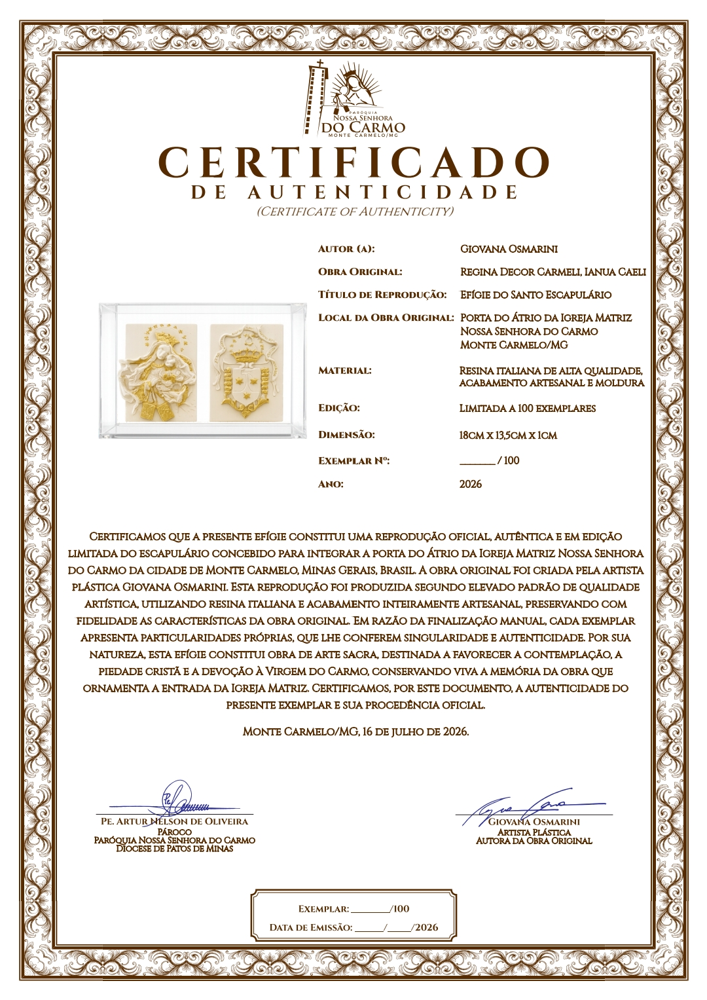

Nossa Senhora do Carmo
Maria conduz seus filhos à contemplação de Cristo e permanece como presença maternal na caminhada de fé.


Opúsculo de apresentação da reprodução oficial do Santo Escapulário inspirado na obra original da porta do Átrio da Igreja Matriz Nossa Senhora do Carmo de Monte Carmelo/MG.
A todos os que receberem esta sagrada efígie, graça, misericórdia e paz da parte de Deus Pai e de Nosso Senhor Jesus Cristo, por intercessão da Bem-aventurada Virgem Maria do Monte Carmelo.
A presente efígie reproduz fielmente o escapulário que adorna a porta do Átrio da Igreja Matriz Nossa Senhora do Carmo, na cidade de Monte Carmelo, Estado de Minas Gerais, inspirado na obra original concebida pela artista plástica Giovana Osmarini.
Esta peça que chega em vossas mãos foi idealizada não apenas como expressão da arte sacra, mas como verdadeiro sinal da piedade mariana, destinado a recordar a todos quantos transpõem o limiar da Casa de Deus que ninguém peregrina sozinho quando se abriga sob o manto daquela que o Senhor nos deu por Mãe.
“Eu sou a porta; quem entrar por mim será salvo.” Jo 10,9
Desde os tempos apostólicos, a porta do templo possui profundo significado espiritual. Ela recorda o próprio Cristo. Todavia, a tradição da Igreja contempla também na Santíssima Virgem aquela por quem o Verbo eterno entrou na história da humanidade, assumindo a nossa carne para realizar a obra da Redenção.
Por isso, desde tempos antigos, os santos Padres e a piedade cristã a saudaram com o venerável título de Ianua Caeli, isto é, Porta do Céu.
Todo aquele que atravessa aquele umbral é convidado a elevar o espírito à contemplação deste mistério: Maria continua conduzindo seus filhos ao encontro de Cristo.
Assim como outrora ofereceu ao mundo o Salvador, continua a conduzir cada alma Àquele que é o Caminho, a Verdade e a Vida, introduzindo os fiéis na comunhão do Reino e sustentando-os na peregrinação da fé.
A tradição carmelita proclama a Virgem Santíssima como Decor Carmeli, isto é, a Beleza do Carmelo.
Nela resplandecem, em perfeita harmonia, a plenitude da graça, a fidelidade absoluta ao desígnio divino e a beleza de uma existência inteiramente consagrada ao Senhor.
Ela é a flor mais formosa do jardim do Carmelo, espelho da contemplação e modelo acabado de todos aqueles que aspiram à íntima amizade com Deus.
Levar esta efígie ao próprio lar significa conservar um memorial visível dessa herança espiritual multissecular.

A obra original foi concebida para integrar, de modo permanente, a porta principal do Átrio da Igreja Matriz Nossa Senhora do Carmo, constituindo-se em expressão visível da fé, da arte sacra e da espiritualidade da família carmelita.
Modelada inicialmente em argila extraída da própria terra de Monte Carmelo, foi cuidadosamente elaborada pela artista plástica Giovana Osmarini.
Em seguida, passou pelo paciente labor da queima, da moldagem e da fundição em bronze, processo pelo qual adquiriu caráter definitivo e tornou-se parte integrante da entrada solene do templo.
Maria conduz seus filhos à contemplação de Cristo e permanece como presença maternal na caminhada de fé.
Sinal da espiritualidade carmelita e memorial da proteção maternal da Bem-aventurada Virgem Maria.
Síntese visual da vocação contemplativa, da tradição profética e da centralidade de Cristo na Ordem do Carmo.
A presente efígie é produzida em edição limitada, segundo rigorosos critérios de excelência artística e elevado padrão de fabricação.
Confeccionada em resina italiana de alta qualidade e apresentada em elegante moldura, reproduz com notável fidelidade os traços da obra original.
Sua etapa final de acabamento é realizada artesanalmente, conferindo a cada exemplar características próprias e singulares.

A apresentação da obra foi preparada para conservar sua história, sua autenticidade e seu significado espiritual.

Reprodução oficial da obra concebida para a porta do Átrio da Igreja Matriz.
Documento oficial que identifica e certifica a procedência de cada exemplar da edição limitada.
Texto dedicado à história da obra, à espiritualidade carmelita e ao significado dos símbolos presentes na composição.
Caso o opúsculo não seja entregue em versão impressa, remova o terceiro item desta seção.

Cada exemplar integra uma edição limitada a apenas 100 unidades e é acompanhado de certificado que atesta sua autenticidade, procedência e vínculo com a obra original.
Cada exemplar possui numeração própria, reforçando seu caráter singular e sua procedência oficial.
Cada elemento heráldico constitui verdadeira síntese da espiritualidade carmelitana.
Evoca o Monte Carmelo, lugar santificado pela presença do profeta Elias e dos antigos eremitas, tornando-se imagem da ascensão da alma para Deus.
A estrela superior representa a Bem-aventurada Virgem Maria, Stella Maris. As duas estrelas inferiores recordam os profetas Elias e Eliseu.
Sinal da realeza da Santíssima Virgem, Rainha e Senhora do Carmelo.
Recorda que Cristo Crucificado ocupa o lugar supremo na espiritualidade carmelitana.
Representa o profeta Elias e simboliza o ardor da Palavra divina, o fogo do Espírito Santo e o zelo pela glória de Deus.
Evocam a Mulher revestida de sol descrita no Apocalipse e a Santíssima Virgem glorificada.
“Estou consumido de zelo pelo Senhor Deus dos Exércitos.”
1Rs 19,10A presença do brasão da Ordem dos Carmelitas Descalços nesta composição possui significado particular para a Igreja que peregrina na Diocese de Patos de Minas.
Em seu território encontra-se o Carmelo da Santíssima Trindade e do Imaculado Coração de Maria, mosteiro de monjas carmelitas descalças, cuja vida escondida, inteiramente consagrada à oração, ao silêncio e à penitência, sustenta invisivelmente a missão evangelizadora da Igreja.
Ao representar o brasão da Ordem, esta obra exprime a comunhão espiritual da Paróquia Nossa Senhora do Carmo de Monte Carmelo com aquele mosteiro contemplativo.
Que esta sagrada efígie jamais seja considerada simples objeto de estima ou ornamento doméstico, mas permaneça, no seio da família cristã, como memorial da proteção maternal da Bem-aventurada Virgem Maria do Monte Carmelo e permanente convite à conversão do coração.
Revestidos espiritualmente do santo Escapulário, perseverem todos na integridade da fé, na firmeza da esperança e na perfeição da caridade.
E a Bem-aventurada Virgem Maria, Regina Decor Carmeli, Ianua Caeli, estenda benignamente sobre todos os que venerarem este sinal da sua maternal proteção o manto do santo Escapulário.
Conserve-os fiéis a Cristo na vida presente e, concluída a peregrinação terrena, conduza-os às alegrias da Jerusalém Celeste, onde o Cordeiro reina pelos séculos dos séculos.
Amém.Sua contribuição ajudará a concluir a obra dos novos sinos da Igreja Matriz Nossa Senhora do Carmo.
Conhecer a campanha